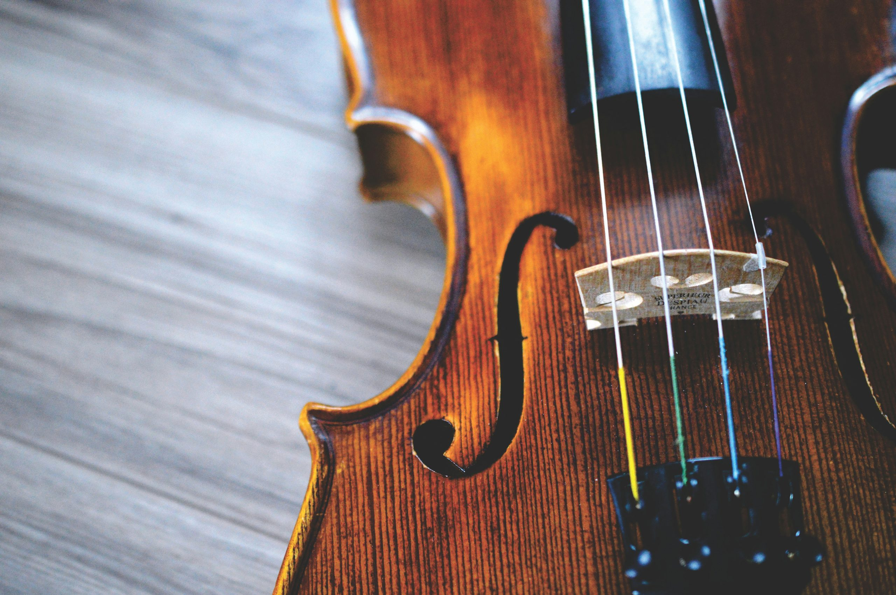
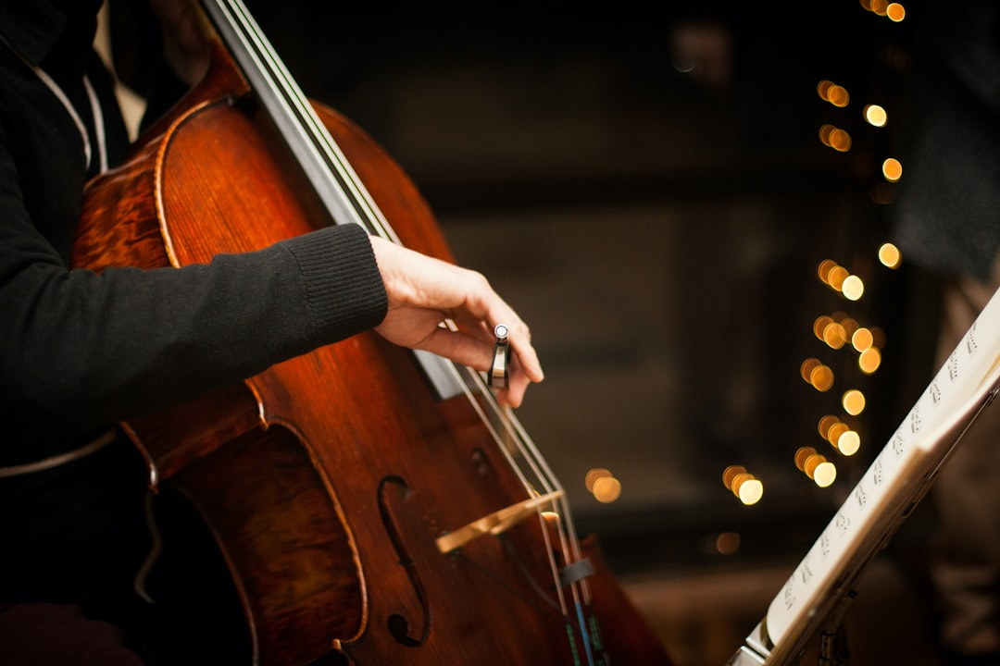

02 / Strings
String

나무의 결이 노래가 되기까지.
현악기는 손끝의 감각에서 시작됩니다. 스프루스와 메이플의 결을 읽고, 한 대 한 대 깎아내는 사이 소리의 성격이 정해집니다.
바이올린에서 첼로까지, 야마하의 현악기는 오케스트라의 깊이와 솔로의 섬세함을 동시에 담습니다. 얇게 다듬은 상판의 두께 하나, 브릿지의 각도 하나가 배음의 균형을 바꿉니다. 장인의 귀가 마지막 음색을 조율하고, 정밀한 공정이 그 소리를 재현 가능하게 만듭니다. 그렇게 완성된 악기는 무대의 가장 여린 피아니시모부터 홀을 채우는 포르티시모까지, 연주자의 호흡을 그대로 옮깁니다.
Specification
- 구성
- 바이올린 · 비올라 · 첼로 · 더블베이스
- 상판
- 셀렉티드 스프루스 솔리드 — 손으로 다듬은 두께
- 측·후판
- 플레임 메이플 · 전통 니스 마감
- 음색
- 풍부한 배음과 긴 여운, 명료한 어택
- 라인업
- 어쿠스틱 · 사일런트 스트링(SV 시리즈)

Make Waves